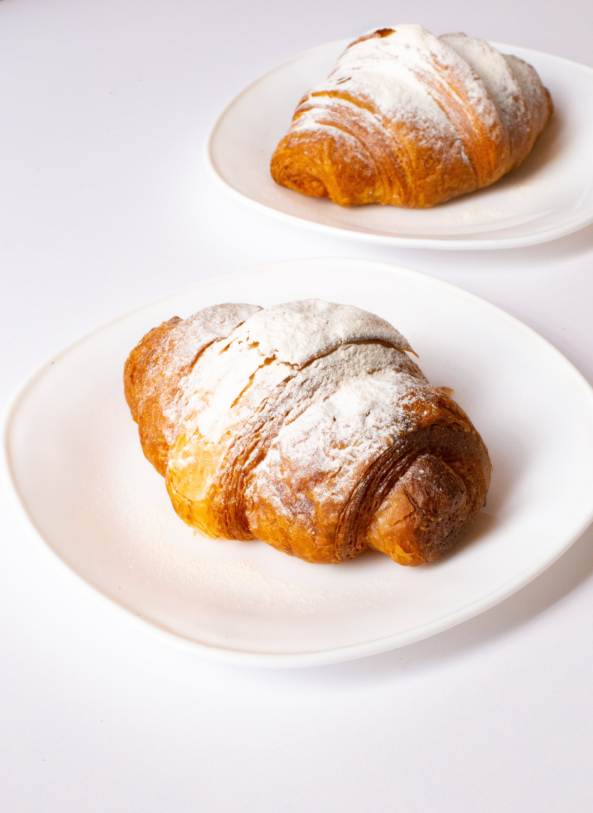

Across various accounts of croissant history, most sources agree that it
originates from Austria as the kipferl. Made from a yeasted wheat dough,
the kipferl is a baked bread roll common in Central Europe. Records
state that the kipferl has been around as early as the 13th century, but
many believe it may be even older. Popular myths attribute its invention
as a celebration of the Ottoman Empire’s defeat in the Battle of Vienna;
the crescent shape represented the moon on the Ottoman flag.
